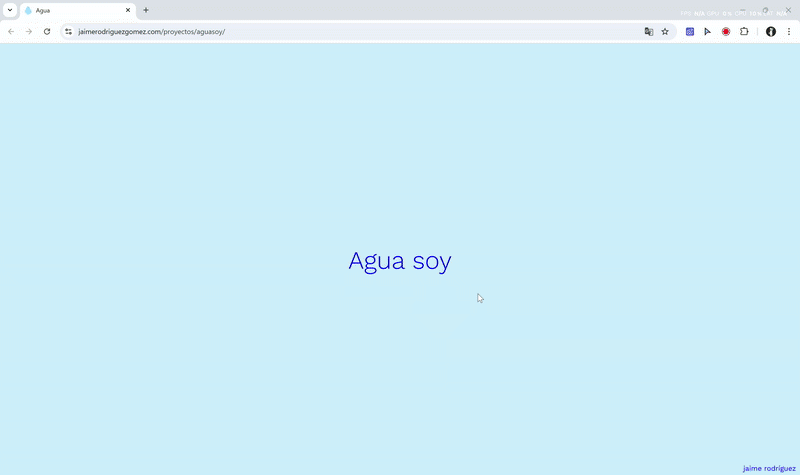
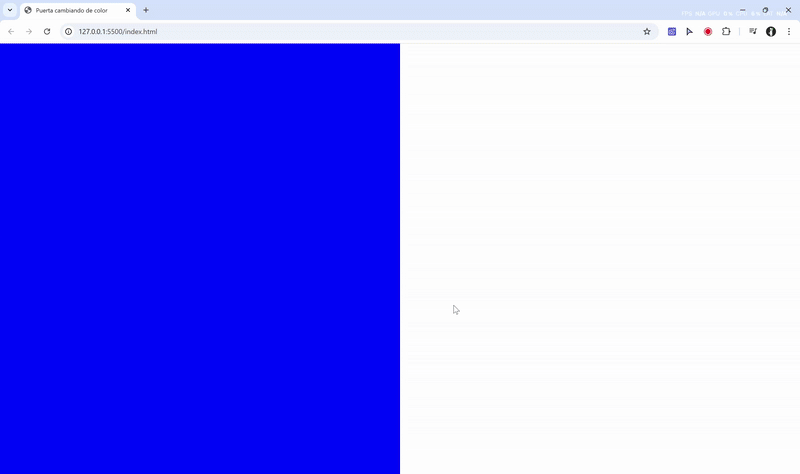

Ejemplos y recursos del curso 'Narrativa Multimedia'
Prof. Jaime Rodríguez [j.rodriguezgomez@uniandes.edu.co]
2 (12/08/2025)
Recursos para el ejercicio 2
👁️ Previsualización:

📁 Descargar carpeta o Ver respositorio directamente en GitHub
3 (14/08/2025)
Imagen (hover → css) y sonido (click → js) dentro de contenedores
👁️ Previsualización:

📁 Descargar carpeta o Ver respositorio directamente en GitHub
💡 Uso de ids entre index.html y script.js

4 (21/08/2025)
Links
👁️ Previsualización:
📁 Descargar carpeta o Ver respositorio directamente en GitHub
5 (28/08/2025)
Animacion usando css (hover)
👁️ Previsualización:
📁 Descargar carpeta o Ver respositorio directamente en GitHub
6 (28/08/2025)
Animacion usando css + js (clic)
👁️ Previsualización:

📁 Descargar carpeta o Ver respositorio directamente en GitHub